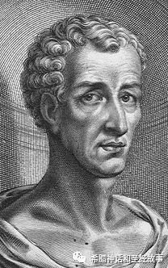

今天我们要讲的主人公就是琉善（Lucian of Samosata，约125年-180年），生于叙利亚的萨莫萨塔，罗马帝国时代的希腊语讽刺作家。是罗马帝国时代最著名的无神论者，唯物主义者。是古代文学中最后一位重要作家、希腊语讽刺散文家。

就是这个著名的无神论者写了Dialoguesof the Gods（《诸神的对话》）, Dialogues of the Sea Gods以及Dialogues of theDead（《死者的对话》）。这些作品却成了研究神话的重要文献，很讽刺吧！
在中国翻译他作品的第一人是周作人，他从英文译本转译题名《月界旅行》的《信史》这篇作品（没有找到原文本）。中华人民共和国成立后，委约他从古希腊语原文选译，1962年到1965年间共译出路吉阿诺斯（就是琉善，周作人从希语音译成了路吉阿诺斯）作品20部，包括从原文新译的长篇小说《真实的故事》和《苍蝇赞》、《宙斯唱悲剧》、《妓女对话》、《诸神对话》等名篇。
《诸神的对话》是25个神之间的小对话，取笑了荷马时代对神的崇拜，剥掉了神的尊严，语言生动活泼。
25五个对话的题目如下：
1.Prometheus and Zeus,
2. Eros and Zeus,
3. Zeus and Hermes,
4. Ganymede and Zeus,
5. Juno and Zeus(1),
6. Juno and Zeus(2),
7. Adranus and Apollo,
8. Adranus and Zeus,
9. Neptune and Hermes,
10. Mercuy and (the) Sun,
11. Venus and Selene,
12. Venus and Zeus,
13. Zeus, Asclepius and Heracles,
14. Hermes and Apollo(1),
15. Hermes and Apollo(2),
16. Hera and Leto,
17. Apollo and Hermes,
18. Hera and Zeus,
19. Aphrodite and Zeus,
20. Ares and Hermes,
21. Autolycus and Hermes,
22. Apollo and Bacchus,
23. Hermes and Maia,
24. Zeus and Helios,
25. Apollo and Hermes.
既然是讽刺作品，那么自然会比较搞笑，但是要想读懂讽刺的点或者搞笑的点在哪里，要有一点希腊神话的积淀才可以。不然把所有搞笑的点都加注释解释出来，那样就没意思了。
今天我们赏析一个对话《厄洛斯和宙斯》
EROS
You might let me off, Zeus! I suppose it was rather too bad of me; but there!—I am but a child; a wayward child.
ZEUS
A child, and born before Lapetus was ever thought of? You bad old man! Just because you have no beard, and no white hairs, are you going to pass yourself off for a child?
EROS
Well, and what such mighty harm has the old man ever done you, that you should talk of chains?
ZEUS
Ask your own guilty conscience, what harm. The pranks you have played me! Satyr, bull, swan, eagle, shower of gold,—I have been everything in my time; and I have you to thank for it. You never by any chance make the women in love with me; no one is ever smitten with my charms, that I have noticed. No, there must be magic in it always; I must be kept well out of sight. They like the bull or the swan well enough: but once let them set eyes on me, and they are frightened out of their lives.
EROS
Well, of course. They are but mortals; the sight of Zeus is too much for them.
ZEUS
Then why are Branchus and Hyacinth so fond of Apollo?
EROS
Daphne ran away from him, anyhow; in spite of his beautiful hair and his smooth chin. Now, shall I tell you the way to win hearts? Keep that aegis of yours quiet, and leave the thunderbolt at home; make yourself as smart as you can; curl your hair and tie it up with a bit of ribbon, get a purple cloak, and gold-bespangled shoes, and march forth to the music of flute and drum;—and see if you don't get a finer following than Dionysus, for all his Maenads.
ZEUS
Pooh! I'll win no hearts on such terms.
EROS
Oh, in that case, don't fall in love. Nothing could be simpler.
ZEUS
I dare say; but I like being in love, only I don't like all this fuss. Now mind; if I let you off, it is on this understanding.
这个世界上，悲剧比喜剧更能成为经典，因为总觉得悲伤是一种更高贵的感情。所以如果一部喜剧性的作品也成为了经典，那么就说明这部作品真的很好。《诸神的作品》就是一部成为喜剧的经典，所以这真的是一部很好的作品，以后有时间我们会多讲几篇。